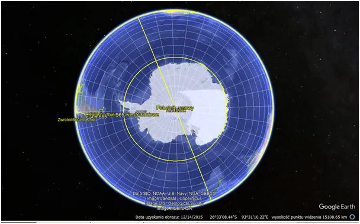
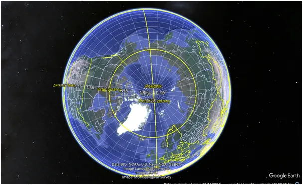
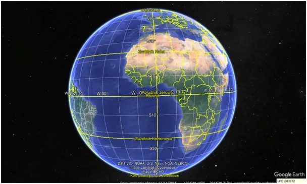
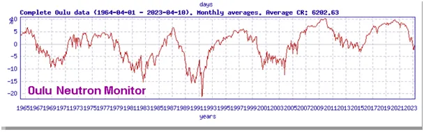

Ziemia widziana z 15 000 km nad Antarktydą zaskakuje
Ziemia widziana z 15 000 km nad Antarktydą zaskakuje.
W praktyce obserwujemy obszar do zwrotnika i wygląda to jak pusty ocean z lodowym kontynentem. Gdy u nas trwa wiosna i lato cały ten obszar ma ujemny bilans energii cieplnej. Na południu Chile i Argentyny już przybywa śniegu ponad normę wieloletnią.

Południowa półkula skrajnie różni się od północnej. Ląd jest skupiony w kole polarnym, na półkuli północnej powyżej zwrotnika. Gdy trwa nasza zima, nad kontynentami wymarza powietrze, które zawiera w sobie kilka procent globalnego ciepła, ale do bieguna docierają prądy oceaniczne, które ciepło z równika wysyłają w Kosmos .

Na południu nie ma takiej możliwości. Gdy trwa zima na półkuli południowej ciepło oddają oceany, które magazynują w sobie ponad 90% ciepła globalnego. Bilans zależy od struktury chmur. Gdy nocą niebo jest czyste południowe oceany oddają ciepło w Kosmos w szybkim tempie.

Kiedy powstają chmury? Powstają, gdy skrapla się para wodna, ale ten proces w szczegółach nie jest dobrze znany. Wiadomo, że proces przyspieszają "ośrodki kondensacji" , czyli różne drobne cząsteczki unoszące się w atmosferze, ale też wiadomo, że powstawanie chmur przyspiesza promieniowanie kosmiczne. To wszechobecne w Kosmosie promieniowanie jest zabójcze dla życia, główną ochroną przed nim jest ziemska jonosfera, warstwa zjonizowanych gazów unosząca się ponad atmosferą. Atmosfera to druga warstwa ochronna. Grubość jonosfery zależy od aktywności Słońca, obecnie Słońce niby jest w czasie wzrostu aktywności, ale jak pisałem wcześniej jest niemrawe. Wygląda na to, że obecny 11- letni cykl wypada w dołku 100- letniego innego cyklu. Wykres pokazuje promieniowanie kosmiczne na Ziemi od 1965. Obecny poziom to 20% wyżej niż w roku 1992 i za 2-4 lata będzie rósł szybko przez kolejne 5,5 roku.

Badania na ten temat robi garstka naukowców, bo nie pasują do obecnej narracji. Nie wiemy jaki jest ostateczny bilans, ponieważ chmury zatrzymują na Ziemi ciepło w nocy, ale odbijają w Kosmos promienie słoneczne w dzień. Ciepło przechowywane w oceanach krąży w prądach morskich latami a budowanie modeli klimatycznych bez tej wiedzy to ślepa uliczka. Robiąc tylko proste zestawienie cykli słonecznych i promieniowania kosmicznego widać, że jonosfera potrzebuje 2 lat na odbudowanie i że jest to proces cykliczny przesunięty o te 2 lata do Słońca. Tak to ta dziura ozonowa, ona powstaje i znika cyklicznie. Nauka dziś nie zna procesu przepływu energii słonecznej przez naszą planetę , ale zna jeden czynnik tylko w atmosferze, który go zmienia... jestem "pod wrażeniem" łatwości wnioskowani i zażenowany kondycją nauki w XXI wielu.
Paweł Klimczewski